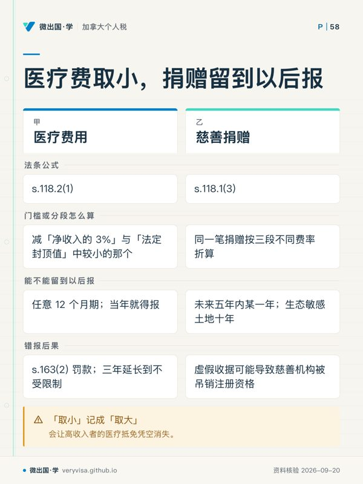
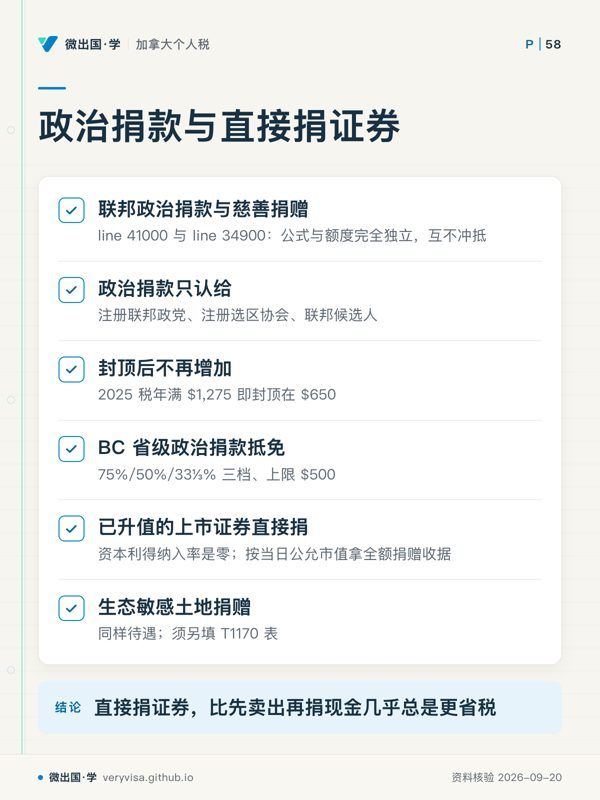

🃏 Flashcards · 3 闪卡 · 3 张 🖼 Slides · 3 幻灯 · 3 页 ✍️ Questions · 7 刷题 · 7 道
T1 个人所得税基础 T1 basics P1 必拿分 P1 Must score
ZH EN ZH + EN
先看这一章怎么考 First, how this chapter is tested
医疗费用门槛计算与取小规则辨析题：给出纳税人净收入与合格医疗支出总额，考查按净收入 3% 还是按法定封顶值（2026 年为 2,890 元）扣除，重点测试高收入者锁定封顶值而非 3% 的「取小」机制。 Medical expense threshold calculation and lesser-of rule distinction questions: Given a taxpayer's net income and total eligible medical expenses, testing whether the deduction threshold is based on 3% of net income or the statutory dollar cap ($2,890 for 2026), focusing on the lesser-of mechanism that locks high earners into the dollar cap rather than 3%. 慈善捐赠分段税率与降税联动计算题：给出当年捐赠金额与收入档次，考查前 $200 适用当年法定「适当百分比」（2026 税年因最低税阶降税自动为 14%）、超过 $200 部分适用 29%/33% 的分段计算结构。 Charitable donation tiered tax credit calculation and tax cut linkage questions: Given donation amounts and income brackets for the year, testing the tiered structure where the first $200 applies the statutory appropriate percentage (automatically 14% in the 2026 tax year due to the lowest federal tax bracket rate cut) and amounts exceeding $200 apply 29% or 33%. 申报窗口选择与家庭成员分流行归集题：给出跨越两个自然年的多笔医疗开支及家庭成员，考查「任意连续 12 个月期」窗口选择、低收入配偶申报优先原则，以及 line 33099 与 line 33199（逐人独立算门槛）的分流归集。 Claim window selection and family member routing questions: Given multiple medical expenses spanning two calendar years and family members, testing the choice of any 12-month period ending in the tax year, the rule prioritizing the lower-income spouse to make the claim, and routing between line 33099 and line 33199 (calculating a separate threshold per dependant). 最常丢分的陷阱（看到题干信号就警觉） Traps that cost the most marks (watch for the signal in the stem)
取小变取大陷阱 Mistaking Lesser Of for Greater Of Trap 题干给出净收入超过约 $96,333 的纳税人并要求计算医疗费用税收抵免（METC）的可申报金额。 The question stem provides a taxpayer whose net income exceeds approximately $96,333 and asks to calculate the claimable medical expense tax credit (METC) amount. 捐赠首段固定 15% 惯性陷阱 Assuming a Fixed 15% First-Tier Donation Rate Trap 题干明确标注为 2026 税年，且要求计算前 $200 额度或整体慈善捐赠税收抵免金额。 The question stem explicitly specifies the 2026 tax year and asks to calculate the credit on the first $200 or the total charitable donation tax credit. 自然年机械割裂陷阱 Rigid Calendar-Year Boundary Trap 题干出现上一年年末（如 11 月、12 月）与本年连续发生的牙科、手术或正畸等自费大额支出。 The question stem presents major out-of-pocket dental, surgery, or orthodontic expenses incurred in late prior year (such as November or December) and the current year. 本章考点页：导图、要点表、7 道带逐项解析的练习 →
核实日期：2026-10-30｜本页口径：2026 税年（2027 年 2–4 月申报） 。本页多个数字逐年指数化，下次复核 2027-01-31。年度数字总表另见 加拿大报税会变的数字：2026 税年总表与它们各自的定值机制（Federal Tax Numbers 2026） ，本页只保留讲清机制所必需的数字。
医疗费用与慈善捐赠，是 T1 报表第五步里排在最后两位的非退还抵免（line 33099/33199 与 line 34900），也是全表里计算规则最反直觉的两格 。它们不是「花了多少填多少」：医疗费要先扣掉一个门槛，门槛按「取小」而不是「取大」；捐赠不是单一税率，而是分段计算，且第一段费率会跟着联邦最低税阶一起变。2026 税年降税之后，这两格也跟着变了。下面帮你给一家人的医疗费选出报得最多的 12 个月窗口，弄清高收入者的医疗费门槛为什么不是简单的 3%，并判断一笔捐赠该按现金还是按证券捐。
一、制度设计与底层逻辑 本节回答 This section answers 解释抵免非扣除逻辑与门槛取小适当百分比机制 Explain why credits are used instead of deductions, the lesser-of threshold rule, and the appropriate percentage mechanism. 本章考题 1 Question 1
1.1 为什么医疗费和捐赠都走抵免，而不是扣除
按非退还抵免总表那一页的分类（见 非退还抵免总表：抵免率从 15% 掉到 14% 之后，每一格该怎么算（2026 税年） ），扣除作用在算收入那一步、抵免作用在算税那一步，前者随边际税率走、后者对所有人一视同仁。医疗费和慈善捐赠被设计成抵免，隐含的立法判断是：这两类支出不是「谋生成本」，是纳税人扣完基本生活开支之后，用剩余的钱做的选择——花在健康上，或捐出去 。政府不想让高收入者因此天然享受更大的好处（那是扣除的效果），所以统一按抵免率折算。
但这条设计遇到了两个现实问题，是本页两条主线的由来。医疗费 的问题是：健康支出的必要性因人而异，全额抵免会显得对轻症患者过于慷慨，于是立法者设了一道「门槛」——只有超过门槛的部分才算抵免。慈善捐赠 的问题正相反：政府想鼓励大额捐赠（它替代了政府本该承担的公共支出），但抵免率如果始终等于最低税阶率，对高收入者的吸引力不够，于是立法者把捐赠拆成三段，前段用最低税阶率、后段挂钩到最高税阶率，段位越高鼓励力度越大。一个设门槛压低给付，一个分段拉高给付，方向正好相反 ——这是理解这两格最关键的一句话。
1.2 「取小」与「适当百分比」：两个法定术语撑起整套机制
医疗费门槛的公式写在 ITA s.118.2(1)：可申报金额 = 全部合格医疗费 − 「净收入的 3%」与「当年法定封顶值」两者中较小的那个 。这条「取小」规则给低收入者更松的门槛（3% 算出来的数很小），也给高收入者一个封顶。反过来记成「取大」，会让高收入者的医疗抵免凭空消失——见第七节错报清单。
图：医疗费用与慈善捐赠——方向正好相反
捐赠抵免的公式写在 s.118.1(3)，形式是 A×B + C×D + E×F。关键在 A：条文写的是「该年度的适当百分比 （appropriate percentage）」，而 s.248(1) 把这个词定义为「s.117(2) 该年度所列的最低 百分比」（加拿大联邦法规库 ）。也就是说，捐赠前 $200 的抵免率不是独立公布的数字，它就是当年联邦最低税阶率 。最低税阶率从 15%（2024）经 14.5%（2025 混合年）降到 14%（2026），捐赠抵免的第一段也就跟着降，无需任何一条单独的捐赠立法（加拿大联邦法规库（1（论坛解读） 、2 ））。公式里的 C 是「最高个人百分比」，等于当年最高税阶率 33%，只适用于捐赠额中落在 33% 税阶收入之上的部分；中间那一段固定按 E＝29% 计算，是公式里唯一写死的数字。
ℹ️
全套非退还抵免里唯一分段计算的一项
基本个人金额、老年额、残障额……几乎所有非退还抵免都是「合格金额 × 单一适当百分比」；捐赠抵免是唯一例外，同一笔捐赠里不同的钱按不同税率折算——这正是「捐得越多、边际抵免率越高」只对大额捐赠者成立的原因。
1.3 两笔支出各自的法律后果
医疗费门槛判断结束后，剩下的部分才进入非退还抵免的固定顺序（s.118.92），两者都排在靠后位置——排在后面的抵免最容易因为前面已经把税抵成零而被浪费（见 非退还抵免总表：抵免率从 15% 掉到 14% 之后，每一格该怎么算（2026 税年） ）。慈善捐赠额度可以选择当年不报，留到未来五年内的某一年 再报（一般捐赠）或十年（生态敏感土地捐赠），这是纳税人自己能操作的例外。医疗费用没有这项弹性——只能按「任意 12 个月期」挑选归集窗口，选好之后当年就得报，不能像捐赠额那样结转。
✕
虚报或重复申报的后果
医疗费凭证造假、重复申报已获理赔的部分，或把不合格支出硬算进医疗费，一经 CRA 抽查，不只是补税加利息，还可能被认定为明知或重大过失下的虚假陈述，按 s.163(2) 处以重大过失罚款（第三方民事罚款是 s.163.2，针对的是代为策划或作虚假陈述的他人，不是纳税人本人），复评时效也会从三年延长到不受限制。捐赠收据造假处理更重：虚假收据可能导致慈善机构被吊销注册资格，纳税人同样补税加罚款。
节末检索小测 · 先别往回翻，凭记忆作答 Quick recall check: answer from memory before scrolling back
Under the Income Tax Act, why does the formula for the medical expense tax credit (METC) deduct the 'lesser' rather than the 'greater' of 3% of net income and the annual dollar cap?
根据《所得税法》，为什么医疗费用税收抵免（METC）的公式中规定扣除净收入的 3% 与年度法定封顶值中「较小（lesser）」的数额，而不是较大者？
a To keep the threshold low for low-income filers while capping it so high earners are not shut out. ✓ 正确。「取小」让低收入者按净收入 3% 得到更低的门槛，同时用法定封顶值（2026 年 2,890 元）挡住高收入者门槛无限攀升。 Correct. The 'lesser of' rule allows lower-income individuals to benefit from a lower threshold based on 3% of net income, while using the statutory cap ($2,890 in 2026) to prevent the threshold from escalating infinitely for high earners.
b To convert the non-refundable tax credit into a progressive tax deduction for middle-income earners. ✗ 错误。医疗费用属于非退还税收抵免（non-refundable tax credit），其抵免率在所有纳税人之间是平等的，并不改变其抵免本质为扣除（deduction）。 Incorrect. Medical expenses provide a non-refundable tax credit with an equal credit rate across all taxpayers, and this mechanism does not alter its credit nature into a deduction.
c To completely eliminate the threshold requirement for any taxpayer whose income exceeds the national median. ✗ 错误。高收入者依然需要扣除法定封顶值门槛，并未被免除门槛要求。 Incorrect. High earners must still deduct the statutory dollar cap threshold and are not exempt from the threshold requirement.
d To ensure that total medical expense claims are capped at exactly 3% of the taxpayer's total taxable income. ✗ 错误。3% 是扣除门槛而非申报金额上限，超过门槛的部分全部可以申报。 Incorrect. The 3% figure is a deductible threshold rather than a cap on claimable expenses; all eligible expenses exceeding the threshold can be claimed.
看答案与每个选项的解析 Show the answer and why each option is right or wrong 答案 Answer ：a
二、2026 税年现行规则与数字 本节回答 This section answers 解析2026现行门槛封顶值捐赠降税费率与退税补助 Analyze the 2026 statutory threshold cap, the reduced donation credit rate, and the refundable medical supplement. 本章考题 2 Question 2 本章考题 4 Question 4 本章考题 5 Question 5
2.1 医疗费用抵免（METC）：门槛、上限与它们各自的机制
净收入超过约 $96,333 的人，门槛一律锁定在 2,890 元（取小规则的封顶端生效）；低于这个分界点的人，门槛就是净收入的 3%。这一分界点是本页自己用「封顶值 ÷ 3%」反推出来的，CRA 没有单独公布这个数 ，做法参见 加拿大报税会变的数字：2026 税年总表与它们各自的定值机制（Federal Tax Numbers 2026） 。
line 45200 退还性医疗费用补助 是表里唯一「退还性」的一项——算到零不会停，多出来的部分真金白银退给你。它专为「劳动收入不高、医疗费或失能支持扣除又不低」的在职者设计，须同时满足两道门：劳动收入（含自雇净收入）达到最低门槛，且调整后家庭净收入低于归零点（CRA（论坛解读） ）。用 2025 年三个官方数字可反推出递减机制：起扣点 33,294 元、最高补助 1,504 元、归零点 $63,374——三者吻合「按超过起扣点部分的家庭净收入 5% 递减」（$63,374 − 33,294 元 = $30,080；×5% = 1,504 元）。line 45200 逐行页至核实日仍标 2025 税年 ，用同一套逻辑换算 2026，归零点应在约 $64,640（33,960 元 + 1,534 元 ÷ 5%）——此为本页推导值，非官方逐字发布值。
⚠️
2026 税年起，家居无障碍改造与医疗费用不能对同一笔支出重复申报
此前一笔合格的无障碍改造支出可同时进 HATC 和 METC，从 2026 税年起这项双报已被取消（已随预算实施法生效），只影响 2026 及之后发生的支出。
2.2 慈善捐赠抵免：三段费率与它们各自的锚点
✕
CRA 自己的捐赠页至今还是 2025 税年口径
截至核实日，CRA「捐赠与礼品：可以申报多少」页顶部自标 Tax year: 2025 ，联邦最低段写 14.5%、BC 省最低段写 5.06%（CRA ）。这不是页面写错，是它在回答 2025 税年的问题——本页 2026 那一列是从法条定义链条推导出来的（适当百分比 = 最低税阶率 = 14%），两端都已核到原文（加拿大联邦法规库（1（论坛解读） 、2 ））。遇到官方页与本页数字不一致，先问「它讲的是哪一年」，不是「谁对」。
2.3 两条容易被混淆的相邻规则：政治捐款与在职证券捐赠
联邦政治捐款抵免（line 41000）与慈善捐赠抵免（line 34900）是两条完全独立的公式与额度 ，不能混用。政治捐款只认给注册联邦政党、注册选区协会、联邦候选人的捐款；公式是前段高比例、封顶后不再增加——2025 税年满 $1,275 即封顶在 $650，此后每加一元也不会多退（CRA ）。两者互不冲抵，省级另有各自的政治捐款抵免（BC 为 75%/50%/33⅓% 三档、上限 $500，长青未变，BC 省政府（论坛解读） 、CRA ）。
另一条容易被忽略的机制是：把已经升值的上市证券直接捐给注册慈善机构，产生的资本利得纳入率是零 ，不是通常的二分之一（CRA ）。捐赠人依然按当日公允市值拿到全额捐赠收据，但账面利得完全不用交税；生态敏感土地捐赠享受同样待遇，结转年限延长到十年，须另填 T1170 表。直接捐证券，比先卖出再捐现金几乎总是更省税。
节末检索小测 · 先别往回翻，凭记忆作答 Quick recall check: answer from memory before scrolling back
In the 2026 tax year, a taxpayer with a net income of $120,000 paid $5,000 in eligible medical expenses for themselves. Given the 2026 statutory threshold cap of $2,890, what is the eligible medical expense amount that can be converted into a non-refundable tax credit on line 33099?
在 2026 税年，一位净收入为 $120,000 的纳税人为自己支付了 $5,000 合资格医疗费用。已知 2026 年法定门槛封顶值为 $2,890，该纳税人可在 line 33099 用于折算非退还税收抵免的合资格医疗费用金额是多少？
a $1,400, calculated as $5,000 minus 3% of net income ($3,600). ✗ 错误。此选项误按净收入 3%（$3,600）扣减门槛，掉入了「取大」陷阱。净收入超约 $96,333 时门槛锁定在法定封顶值 $2,890。 Incorrect. This option mistakenly deducts 3% of net income ($3,600) as the threshold, falling into the 'greater of' trap. When net income exceeds approximately $96,333, the threshold locks at the statutory cap of $2,890.
b $5,000, because taxpayers earning over $96,333 are exempt from the medical threshold deduction. ✗ 错误。税法并未免除高收入者的门槛，必须先扣除法定封顶值 $2,890。 Incorrect. Tax law does not exempt high earners from the threshold requirement; the statutory cap of $2,890 must be deducted first.
c $2,110, calculated as $5,000 minus the statutory capped threshold of $2,890. ✓ 正确。净收入 $120,000 的 3% 为 $3,600，大于 2026 年法定封顶值 $2,890。按「取小」原则门槛锁定在 $2,890。可申报金额为 $5,000 − $2,890 = $2,110。 Correct. 3% of $120,000 net income is $3,600, which exceeds the 2026 statutory cap of $2,890. Under the 'lesser of' rule, the threshold is capped at $2,890. The claimable amount is $5,000 − $2,890 = $2,110.
d $2,241, calculated using the outdated 2024 threshold of $2,759. ✗ 错误。此选项使用了 2024 税年的历史封顶值 $2,759，而非 2026 税年生效的 $2,890。 Incorrect. This option uses the historical 2024 tax year cap of $2,759 rather than the $2,890 cap effective for the 2026 tax year.
看答案与每个选项的解析 Show the answer and why each option is right or wrong 答案 Answer ：c
三、实务流程 本节回答 This section answers 掌握任意12个月窗口选择受抚养人分流与对价扣减 Master selecting any 12-month window, routing dependant claims, and applying split-receipting rules. 本章考题 3 Question 3
3.1 医疗费用：从「任意 12 个月」到 line 33099/33199
第一步，选窗口。 报税人可自选一个「在报税年度内结束」的连续 12 个月区间来归集医疗费，不必是自然年的 1 到 12 月，只要这批费用没在上一年度申报过（CRA（论坛解读） ）。医疗支出集中在跨年之交时，选一个跨年窗口往往能把两段零散支出并成一笔总额，更容易冲过门槛。
第二步，判断谁的费用进哪一行。 line 33099 归集本人、配偶及双方不满 18 岁子女的医疗费；line 33199 归集其他受抚养人——18 岁以上子女、孙辈、父母、祖父母、兄弟姊妹、叔伯姑姨、侄甥（须是加拿大居民）。每个受抚养人在 line 33199 下单独计算一次「取小」门槛 ，不是共用一个门槛。
第三步，判断由谁申报。 CRA 的操作提示是：应由净收入较低的一方申报医疗费用（CRA（论坛解读） ）。门槛是净收入的 3%，收入越低门槛越低，同一笔医疗费报在收入较低一方名下，能扣的余额通常更大。
第四步，凭旅行门槛判断能加报什么。 单程达到 40 公里 可加报公共交通或自驾费用；达到 80 公里 可进一步加报住宿、餐饮和停车费，且允许境外就医（CRA（论坛解读） ）。里程与餐费可选「详细法」（留存收据）或「简化法」（按定额），同一趟行程只能二选一。
第五步，核对退还性补助（line 45200）。 劳动收入达到最低门槛且家庭净收入低于归零点时，同一笔已在 line 33200 申报过的医疗费，可再单独跑一遍工作表申领这项退还性补助——它与 METC 是两笔各自独立计算的抵免，不是二选一。
3.2 慈善捐赠：合格金额、对价扣减与结转
合格受赠人是前提。 只有捐给 CRA 注册慈善机构或其他合格受赠人（如注册新闻组织、境外合格大学）才能开出有效收据；捐给亲友个人、未注册团体或个人求助，不产生捐赠抵免——尤其容易在跨境家庭里被误解（见第六节案例）。
收到「对价」要先扣。 捐款换回晚宴、拍卖品之类回报时，收据只能开「捐款金额减对价公允市值」之后的「合格金额」，机制叫 split receipting。唯一豁免是「微量对价」：对价合计不超过 $75 或捐赠公允市值 10%（两者取较小），可忽略不减、全额开收据（CRA（论坛解读） ）。
当年不报，留到以后报。 一般捐赠额度可结转未来 5 个税年，生态敏感土地捐赠可结转 10 个税年（CRA ）。配偶或同居伴侣之间可把捐赠额合并到一方名下申报，通常合并给净收入较高、更快触及 29%/33% 高段费率的一方更划算——与医疗费「报给收入低的一方」正好相反，因为两者的费率结构方向相反。
节末检索小测 · 先别往回翻，凭记忆作答 Quick recall check: answer from memory before scrolling back
A taxpayer drove 95 kilometres each way to take their spouse to a specialized cancer treatment clinic in Canada, paying $3,000 in eligible treatments. Which additional travel expenses can the taxpayer claim under the medical expense provisions?
一位纳税人单程驾车 95 公里护送配偶前往加拿大境内的一家专科癌症诊所就医，支付了 $3,000 合资格治疗费。根据医疗费用抵免规定，该纳税人还可以额外申报哪些差旅费用？
a Only public transit or private vehicle mileage costs, because claiming meals and lodging requires travel of at least 150 kilometres. ✗ 错误。单程达到 80 公里即可申报住宿与餐饮，无需达到 150 公里。 Incorrect. Travel of at least 80 kilometres one-way qualifies to claim accommodation and meal expenses; there is no 150-kilometre requirement.
b Mileage or transit, plus reasonable lodging, meals and parking, as the one-way trip meets the 80 km test. ✓ 正确。根据医疗差旅费用规定，单程达到 40 公里可报交通或自驾里程费；单程达到 80 公里可进一步加报住宿、餐饮和停车费。95 公里已达到 80 公里门槛。 Correct. Under medical travel rules, traveling at least 40 kilometres one-way qualifies for public transit or vehicle mileage expenses, and traveling at least 80 kilometres one-way qualifies to also claim accommodation, meals, and parking. A 95-kilometre one-way trip clears the 80 km threshold.
c No travel expenses are eligible because medical travel within Canada is excluded from line 33099. ✗ 错误。加拿大境内符合里程门槛的就医差旅完全属于合法报销范围。 Incorrect. Medical travel within Canada meeting the statutory distance thresholds is fully eligible for claim.
d Only accommodation expenses, because meal expenses require a formal referral letter from Health Canada. ✗ 错误。单程达 80 公里餐饮费即可申报（可选详细法或简化法定额），并不需要卫生部的专门信件。 Incorrect. Meal expenses are eligible once one-way travel reaches 80 kilometres (using either the detailed method or the simplified flat-rate method), without requiring a special letter from Health Canada.
看答案与每个选项的解析 Show the answer and why each option is right or wrong 答案 Answer ：b
四、联邦之外：BC 省怎么走 本节回答 This section answers 对比BC省捐赠首段升至5.6%与农产品叠加抵免 Compare BC rules featuring the first-tier donation rate increase to 5.6% and the stacked farmers food donation credit.
BC 省的医疗费用抵免沿用联邦同一份合格清单和「3% 与省定封顶值取小」的机制，只是封顶值与省税率不同，在省表（BC428）对应行填报，不需要重新判断资格。
BC 省的慈善捐赠抵免结构与联邦一致——前 $200 按省最低税阶率、之后按省高段税率分段——2026 税年 BC 最低段费率已从 5.06% 升到 5.6%，同一条「适当百分比」定义链条换成省法。BC 另有联邦没有的农产品捐赠抵免 （合资格捐赠额的 25%，可与普通慈善捐赠抵免叠加，须五年内主张），到期日已在 BC Budget 2026 被永久化——农户捐赠农产品给食物银行，这一项常被漏报。
BC 省级政治捐款抵免公式是 75%/50%/33⅓% 三档、上限 $500（BC 省政府（论坛解读） 、CRA ），与联邦政治捐款抵免各自独立、互不冲抵，也都与慈善捐赠抵免分开计算。
节末检索小测 · 先别往回翻，凭记忆作答 Quick recall check: answer from memory before scrolling back
A British Columbia resident who operates a commercial farm donates $2,000 worth of eligible fresh agricultural produce directly to a registered local food bank in 2026. What unique provincial tax incentive is available to this farmer in BC?
2026 年，一位经营商业农场的 BC 省居民将价值 $2,000 的合资格新鲜农产品直接捐赠给本地注册食物银行。在 BC 省，该农户可以享受哪项独特的省级税收优惠？
a A 100% full tax deduction against agricultural gross revenue that replaces all charitable tax credits. ✗ 错误。农产品捐赠抵免是税收抵免而非收入扣除，且不取代普通慈善捐赠抵免。 Incorrect. The farmers' food donation credit is a tax credit rather than an income deduction, and it does not replace the standard charitable donation tax credit.
b An exemption from filing provincial personal income tax returns for the subsequent three years. ✗ 错误。税法不存在免除申报个人税的优惠。 Incorrect. Tax legislation provides no exemption from filing personal income tax returns.
c A non-refundable BC provincial tax credit equal to 50% of the produce value that cannot be combined with federal credits. ✗ 错误。BC 农产品捐赠抵免比例为 25% 而非 50%，且允许与普通慈善捐赠抵免叠加申报。 Incorrect. The BC farmers' food donation credit rate is 25% rather than 50%, and it can be claimed in addition to the standard charitable donation tax credit.
d A 25% BC farmers' food donation tax credit that can be claimed in addition to the regular charitable donation tax credit. ✓ 正确。BC 省独有农产品捐赠抵免（BC Farmers' Food Donation Tax Credit），符合资格的农户向食物银行捐赠农产品，可享受合资格金额 25% 的省级税收抵免，且可与普通慈善捐赠抵免叠加申报（BC Budget 2026 已将该政策永久化）。 Correct. British Columbia provides a unique BC Farmers' Food Donation Tax Credit: qualifying farmers who donate agricultural products to food banks receive a 25% provincial non-refundable tax credit on the eligible amount, which can be claimed in addition to the regular charitable donation tax credit (made permanent in BC Budget 2026).
看答案与每个选项的解析 Show the answer and why each option is right or wrong 答案 Answer ：d
五、历史变革 本节回答 This section answers 梳理2026禁双报HATC与降税联动适当百分比历史 Review the legislative history behind the 2026 prohibition on double-claiming HATC and the appropriate percentage linkage.
医疗费用抵免门槛「取小」的立法结构由来已久，考试口径与现行法在这一点上没有分歧——真正的变化在数字，而不在机制 ：封顶值逐年指数化，2026 税年 2,890 元 也是按年指数化的结果。结构性变化落在两处：一是 2026 税年新加的「HATC 与 METC 不得对同一笔支出重复申报」，此前十几年这两项抵免一直可以叠加申领，是本轮最值得单独标注的口径切换；二是退还性医疗费用补助的归零点从考试口径年份（2024 税年）的约 $61,699（32,419 元 + 1,464 元 ÷ 5%）推高到 2025 年的 $63,374，反映起扣点和上限每年都在小步指数化。
慈善捐赠抵免的分段结构（前段最低税阶率、后段挂钩最高税阶率）也没有变过，唯一的变化是数字：最低税阶率从 15%（考试口径的 2024 税年）经 2025 混合年的 14.5%，降到 2026 税年的 14%。这不是一条单独的「捐赠新规」，而是整个非退还抵免体系被降税牵动的连锁反应之一——这正是本页第一节强调「适当百分比」这个法定术语的原因：理解这个词的定义，就能推出这条规则永远不需要单独立法修订 。
节末检索小测 · 先别往回翻，凭记忆作答 Quick recall check: answer from memory before scrolling back
Which of the following personal income tax credit changes was newly enacted and became effective starting in the 2026 tax year?
下列哪项关于个人所得税抵免的变动是在 2026 税年新设立并正式生效的？
a The carryforward duration for standard charitable donation amounts was reduced from 5 years to 3 years. ✗ 错误。普通慈善捐赠额度的结转年限长青保持为 5 年未变。 Incorrect. The carryforward period for standard charitable donation amounts remains unchanged at 5 years.
b A qualifying home accessibility renovation expense can no longer be claimed simultaneously under both HATC and METC. ✓ 正确。此前十余年合资格家居无障碍改造支出可同时进 HATC 和 METC，但从 2026 税年起，预算实施法正式取消了这一双重申报机制，纳税人对同一笔支出只能二选一。 Correct. While qualifying home accessibility renovation expenses could previously be claimed under both HATC and METC for over a decade, the Budget Implementation Act officially eliminated this double-claiming mechanism starting in the 2026 tax year, requiring taxpayers to choose one or the other.
c The medical expense net income threshold was permanently raised from 3% to 4%. ✗ 错误。医疗费用 3% 的净收入比例门槛长青未变。 Incorrect. The 3% net income threshold for medical expenses remains unchanged.
d The capital gains inclusion rate on listed securities donated to registered charities was increased from 0% to 25%. ✗ 错误。捐赠已上市证券的资本利得纳入率长青保持为零（0%）。 Incorrect. The capital gains inclusion rate on donated publicly listed securities remains unchanged at zero (0%).
看答案与每个选项的解析 Show the answer and why each option is right or wrong 答案 Answer ：b
六、案例 本节回答 This section answers 解析双职工跨年合报捐证券与自雇退还补助实务 Examine dual-income couples combining claims across years, donating securities, and self-employment refundable supplement practice.
案例一：本拿比的双职工家庭，选窗口 + 捐证券。 陈太太与陈先生（示例）2026 年陆续支付了牙科、验光和处方药费用，一大笔牙科账单发生在 2025 年 11 月，另一批发生在 2026 年 8 月。按自然年分别申报，两年各自都够不上门槛；但两人可选一个 2026 年 8 月结束的 12 个月窗口（2025 年 9 月至 2026 年 8 月，且这些费用未在其他税年申报），把两笔支出并成一笔总额一起报——这正是「任意 12 个月」条款的价值。两人净收入分别是 $52,000 与 $98,000，医疗费应报在陈太太名下（门槛更低）。同一年，陈先生打算把一笔账面利得 $30,000 的上市基金单位捐给本地医院基金会：直接捐证券而不是先卖出再捐现金，这笔利得纳入率为零，同时仍能拿到全额收据。
案例二：素里的自雇网约车司机，退还性补助 + 旅行门槛。 王先生（示例）2026 年净自雇收入 $18,000，家庭净收入合计 $38,000。他因慢性病定期往返 90 公里外的专科诊所，符合 80 公里门槛，除交通费还能加报住宿和餐饮；医疗与旅行支出扣完门槛后，还应核对 line 45200——他的劳动收入远超最低门槛、家庭净收入也低于归零点，同一笔医疗费可再单独跑一次退还性补助工作表，多拿一笔实打实的退款，而不是像多数非退还抵免那样只能抵到零为止。
案例三：列治文的新移民家庭，跨境捐款与政治捐款的混淆。 林先生一家 2026 年给国内父母寄了一笔钱补贴家用，同一年又给一位联邦候选人捐了 $300、给一家注册慈善机构捐了 $500。寄给父母的钱不产生任何抵免 ——不是捐给合格受赠人的礼物，是家庭赡养；给候选人的 $300 只能填 line 41000（高比例公式，封顶后不再增加）；给慈善机构的 $500 只能填 line 34900（前 $200 按 14%、剩余 $300 按 29%）。三笔钱三种结果，混在一起报要么少抵、要么被打回。
节末检索小测 · 先别往回翻，凭记忆作答 Quick recall check: answer from memory before scrolling back
In 2026, a Canadian tax resident sent $3,000 directly via international wire transfer to their elderly grandparents overseas to assist with living expenses. How should this wire transfer be reported on the Canadian T1 return?
2026 年，一位加拿大税务居民通过国际电汇直接向其海外年迈祖父母汇款 $3,000 以补贴生活费。这笔电汇款项应如何在加拿大 T1 申报表上申报？
a Neither line applies: support sent to relatives abroad is not a gift to a qualified donee or an eligible medical expense. ✓ 正确。给海外亲属汇款属于私人家庭赡养支出，海外亲属个人不是 CRA 注册慈善机构或其他合格受赠人（qualified donee），不能申报慈善捐赠；同时该笔款项属于普遍生活补贴而非合格医疗支出清单项目且亲属为非居民，不能申报医疗抵免。 Correct. Wire transfers to relatives abroad represent personal family support expenditures; overseas relatives are not CRA registered charities or qualified donees, disqualifying them from the charitable donation credit; furthermore, general living allowances are not on the list of eligible medical expenses and non-resident relatives do not qualify for the medical credit.
b It can be claimed as a charitable donation on line 34900 under the international family humanitarian gift exemption. ✗ 错误。加拿大税法不存在所谓的国际家庭人道主义捐赠豁免，未向合格受赠人捐赠不得申报 line 34900。 Incorrect. Canadian tax law contains no international family humanitarian gift exemption; gifts not made to a qualified donee cannot be claimed on line 34900.
c It qualifies for the standard 14% lowest-tier charitable donation credit provided bank wire transfer receipts are attached. ✗ 错误。银行电汇凭证仅证明资金转移，并非合格受赠人出具的法定正式捐赠收据。 Incorrect. Bank wire transfer slips merely verify the movement of funds and do not constitute official donation receipts issued by a qualified donee.
d It is 100% tax-deductible as an overseas alimony and maintenance support payment on line 22000. ✗ 错误。自愿资助父母或祖父母的生活费不属于法定分居或离婚赡养费（support payments），不能在 line 22000 扣除。 Incorrect. Voluntary financial assistance provided to parents or grandparents does not qualify as deductible spousal or child support payments on line 22000.
看答案与每个选项的解析 Show the answer and why each option is right or wrong 答案 Answer ：a
七、常见错报与自查清单 本节回答 This section answers 排查门槛取大惯性双报旧口径与证券变现错报雷区 Identify error traps including greater-of threshold assumptions, outdated double-claiming habits, and selling securities before donating.
把医疗费门槛记成「3% 与封顶值取大」 ——识别：门槛应是两者中较小的那个，净收入超过约 $96,333 的人一律按 2,890 元 封顶，而不是按更大的 3% 数值算。一家人各自按自然年分别申报医疗费 ——识别：只要窗口在报税年度内结束、且没在上一年重复申报过，就可以选一个跨年区间归集，选错窗口会损失一大笔本可合并的支出。把无障碍改造支出在 2026 税年同时报进 METC 和 HATC ——识别：双报自 2026 税年起已被取消，同一笔支出只能二选一，继续按旧口径双报会被 CRA 调整并加计利息。把捐给亲友个人或未注册团体的钱当慈善捐赠抵免申报 ——识别：只有捐给注册慈善机构或其他合格受赠人才能开出有效收据，家庭赡养、个人求助都不产生这项抵免。误以为捐赠抵免和联邦政治捐款抵免可以互相替代或合并计算 ——识别：两者是两套独立公式，分别填在 line 34900 与 line 41000，捐给候选人或政党的钱永远不能算进慈善捐赠那一格。忽略「先卖出再捐现金」比「直接捐证券」多交一道税 ——识别：直接捐出已升值的上市证券，资本利得纳入率为零；先卖出再捐现金，卖出那一步要先按二分之一纳入率交税。
节末检索小测 · 先别往回翻，凭记忆作答 Quick recall check: answer from memory before scrolling back
A taxpayer donates $600 to a registered charity's annual benefit dinner and receives a banquet ticket with an established fair market value of $50. How does the de minimis rule apply to this donation receipt?
一位纳税人向某注册慈善机构的年度慈善晚宴捐赠了 $600，并收到一张公允市值为 $50 的宴会门票。微量对价豁免规则（de minimis rule）如何适用于这张捐赠收据？
a The de minimis threshold is exceeded, so the charity must issue a receipt for the net amount of $550. ✗ 错误。微量对价门槛为 $75 或捐赠市值 10%（$600 × 10% = $60）中较小者，即 $60。门票市值 $50 未超过 $60，符合微量豁免条件。 Incorrect. The de minimis threshold is the lesser of $75 and 10% of the gift ($600 × 10% = $60), which is $60. Because the banquet ticket value of $50 does not exceed $60, it qualifies for the de minimis exemption.
b The receipt must be issued for $0 because receiving any banquet advantage completely invalidates charitable intent. ✗ 错误。对价扣减（split receipting）仅扣减回报市值，绝不导致整笔捐赠收据作废。 Incorrect. Split receipting merely reduces the receipt value by the fair market value of the advantage; receiving an advantage does not invalidate the entire donation receipt.
c The $50 does not exceed the lesser of $75 and 10% of the gift ($60), so a full $600 receipt is issued. ✓ 正确。根据微量豁免规则（de minimis rule），纳税人换回的回报（advantage）公允市值若不超过 $75 或捐款金额 10% 两者中较小者（本例为 min($75, $60) = $60），该对价可忽略不计，慈善机构可按 $600 全额开具捐赠收据。 Correct. Under the de minimis rule, if the fair market value of the advantage received does not exceed the lesser of $75 and 10% of the gift amount (here, the lesser of $75 and $60 is $60), the advantage is disregarded and the charity can issue an official donation receipt for the full $600.
d The taxpayer must report the $50 banquet dinner as taxable employment income on line 10100. ✗ 错误。慈善晚宴门票不是雇员福利，与受雇收入无关。 Incorrect. A charity banquet dinner ticket is not an employee benefit and has no connection to taxable employment income.
看答案与每个选项的解析 Show the answer and why each option is right or wrong 答案 Answer ：c
术语双语表
主要参考 ：CRA "Lines 33099 and 33199"（CRA（论坛解读） ）· Guide RC4065（CRA（论坛解读） ）· "Line 45200"（CRA（论坛解读） ）· "Federal political contributions"（CRA ）· "Capital gains realized on gifts of certain capital property"（CRA ）· "Split receipting"（CRA（论坛解读） ）· "How much you can claim — Donations and gifts"（CRA ）· ITA s.118.1(3)/s.248(1)（加拿大联邦法规库（1（论坛解读） 、2 ））· "Indexation adjustment"（CRA ）。
本页知识卡 不看正文也能拿到这一节的核心内容：先看导读，再看图。点图放大，左右翻页。
放大 ⤢ 前 $200 的抵免率就是当年联邦最低税阶率 先看 先看正中的格子，它不跟税阶变化，最适合作锚点。易漏 官方捐赠页仍按 2025 口径；遇到不一致，先核对它回答的是哪一年。下一步 做练习，再把年度选择问题带给持牌专业人士。详情与分享 → 
放大 ⤢ 医疗费是门槛计算；慈善捐赠是分段计算 先看 先看第二行：这里最容易把两种机制混成一种算法。易漏 两者都排在非退还抵免靠后位置，前面的抵免已把税抵成零时可能浪费。下一步 去练习，分别判断窗口选择和延后申报；复杂凭证问题找持牌专业人士。详情与分享 → 
放大 ⤢ 政治捐款独立；直接捐证券时账面利得完全不用交税 先看 先看带金额的一格，它决定继续增加是否还有效果。易漏 生态敏感土地的结转年限延长到十年；这里没有展开一般捐赠的留用规则。下一步 去练习，把收款对象与资产交付方式分开判断；复杂交易找持牌专业人士。详情与分享 → 本站依据官方原文自撰 · 出处见正文链接